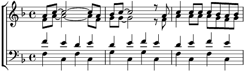

Refrain:
[SA] Bonjour, les beaux jours!
Salut, le printemps qui reviens
Semer dans les prés la rosée parfumée du mois de mai
Soleil, merveille,
Tu viens, tu réveilles la vie!
Tu souffles en douceur des couleurs
Dans les fleurs et du bonheur dans les coeurs!
[TB] Bonjour, les beaux jours! Bonjour!
Salut, printemps toi qui reviens
Semer aux prés la rosée parfumée de mai
Ô Soleil, merveille,
Viens, pour réveiller la vie!
Tu souffles, souffles des couleurs
dans les coeurs!
1. [Tous] Les prairies n'ont plus de manteau blanc,
L'ont jeté à la rivière!
Elle est au vert, la mode du printemps,
Picotée de primevères!
2. Les oiseaux solfient à l'air du temps
Frémissant dans les feuillages;
Elle est légère la chanson du printemps,
Harmonie de tous ramages!
3. Les vergers fleurissent en rêvant
Qu'ils épousent les abeilles;
Elle nous promet la noce du printemps,
Plein de fruits dans nos corbeilles!